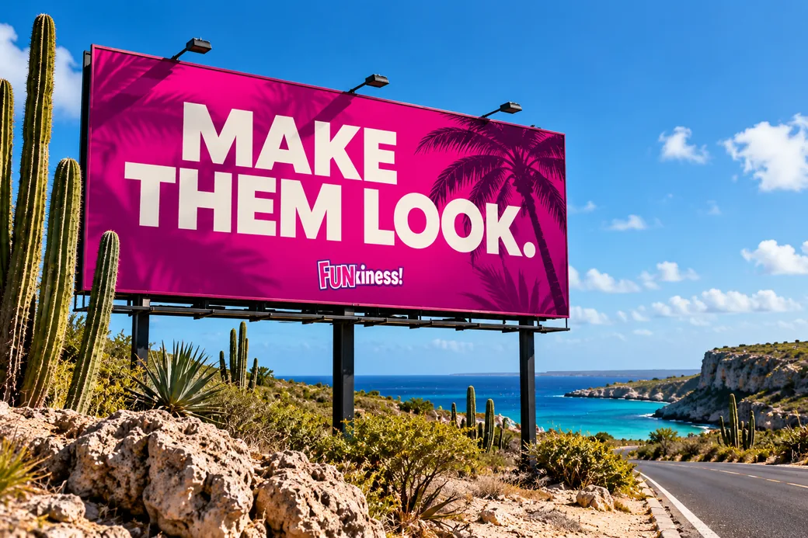
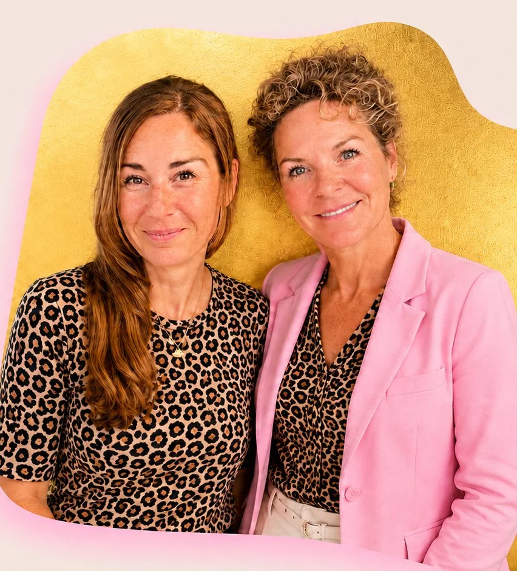

Een sterk merk is meer dan een logo, en een goede campagne is meer dan iets moois met een deadline. We combineren strategie, positionering en creatief denken om merken en campagnes te bouwen die mensen iets geven om op te merken, te begrijpen en te onthouden.

Een kleurenpalet maakt je herkenbaar. Een logo zet je naam ergens op. Maar geen van beide bepaalt waar je bedrijf voor staat, waarom mensen erom zouden geven, of wat jou anders maakt.
Daar beginnen we.
We bouwen eerst de strategische en creatieve richting, en vertalen die daarna naar branding en campagnes die daadwerkelijk iets te zeggen hebben.
Mooi trekt aandacht.
Een standpunt blijft hangen.
Of je nu een nieuw merk bouwt of je huidige merk de weg een beetje kwijt is, wij helpen aanscherpen waar het voor staat en hoe het zich laat zien.
We bepalen wat je merk relevant, onderscheidend en de moeite waard maakt, zodat je niet alleen op uiterlijk hoeft te concurreren.
Praat mee over positionering →Doelgroep, persoonlijkheid, propositie, positionering en richting. Het denkwerk dat alles wat je daarna maakt een reden geeft om er zo uit te zien en zo te klinken.
Praat mee over merkstrategie →We bepalen hoe je merk spreekt, zodat mensen je herkennen nog voordat ze het logo hebben gezien.
Praat mee over merkstem →We vertalen de strategie naar een herkenbare creatieve wereld voor je merk, van visuele richting en concepten tot hoe het terugkomt in je hele marketing.
Praat mee over creatie →Een aanbieding is geen campagne. Hetzelfde bericht in zes verschillende formaten stoppen ook niet.
Wij ontwikkelen marketingcampagnes rond één sterk idee en bepalen hoe dat idee moet reizen over de kanalen die ertoe doen.
Wat proberen we te veranderen, wie moet het opmerken en wat moet er daarna gebeuren? We bepalen het doel voordat we beginnen met creëren.
Praat mee over strategie →Hier wordt strategie interessant. We ontwikkelen het centrale idee, de invalshoek en de creatieve richting die de campagne haar persoonlijkheid geven.
Praat mee over concepten →Nieuw bedrijf, product, dienst, locatie of concept? Wij bedenken het marketingidee en de uitrol rond de lancering, in plaats van pas tijdens openingsweek te bedenken wat we gaan posten.
Praat mee over je lancering →Social, digitaal, content, partnerships, activaties of offline. Wij kiezen de combinatie die het idee dient, in plaats van elke campagne in dezelfde kanalenmix te persen.
Praat mee over campagnes →Curaçao heeft z'n eigen doelgroepen, cultuur, talen en commerciële werkelijkheid. Een campagne die elders werkt, werkt hier niet automatisch ook.
FUNkiness! is gevestigd op Curaçao. Dat betekent dat we merken en campagnes bouwen met de lokale markt in gedachten vanaf het eerste idee, terwijl het werk fris, eigentijds en klaar blijft om op te vallen.
Het leuke werkt beter als het denkwerk eronder klopt.
Branding en campagnes bij FUNkiness! beginnen met strategie. We kijken naar je bedrijf, doelgroep, positionering en doelen voordat we bepalen wat het creatieve antwoord moet zijn.
Zo krijgt het werk persoonlijkheid zonder de rode draad kwijt te raken.

Een sterk merk of campagne heeft ergens een thuis nodig. We kunnen de richting vertalen naar social media, campagnes en de content die nodig is om het idee de wereld in te krijgen. En ja, we gebruiken ook AI, voor research, verkenning en soms om creatief denken ergens onverwachts naartoe te duwen. Het idee heeft nog steeds als eerste een bestaansreden nodig.
Een branding-bureau helpt bepalen hoe een bedrijf gepositioneerd, begrepen en herkend moet worden. Bij FUNkiness! richten we ons op merkpositionering, strategie, merkstem en creatieve richting, en verbinden we dat denkwerk aan je bredere marketing.
Ja. FUNkiness! werkt met bedrijven op Curaçao aan merkpositionering, merkstrategie, merkstem en creatieve richting.
Ja. We ontwikkelen campagnestrategie, creatieve concepten en uitrolplannen rond lanceringen, promoties en andere commerciële momenten.
Ja. Je hoeft niet bij nul te beginnen. We kijken wat al werkt, brengen in kaart wat onduidelijk of gedateerd is geworden en ontwikkelen van daaruit een scherpere richting.
Ja. Afhankelijk van de campagne kan FUNkiness! strategie, creatieve richting, social media en content verzorgen, en de bredere uitvoering coördineren die nodig is om het idee tot leven te brengen.
Een scherper merk. Een groter idee. Een campagne waar mensen daadwerkelijk naar willen kijken. Laten we het waarmaken.
Laten we iets maken ↗Boring was never the plan. Zeker hier niet.